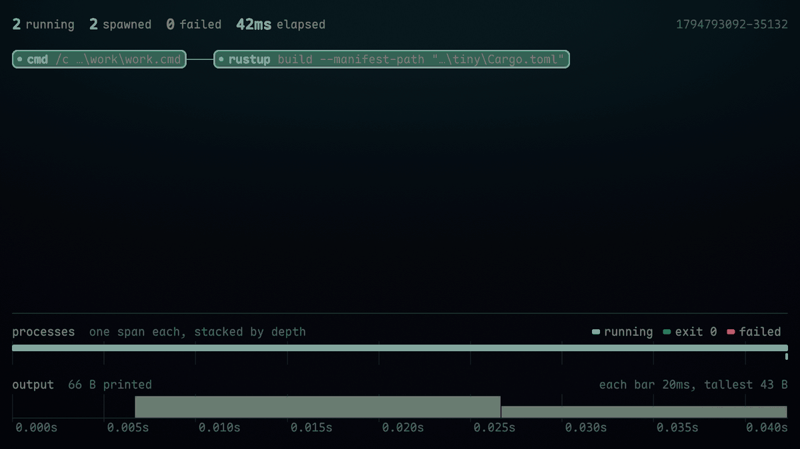
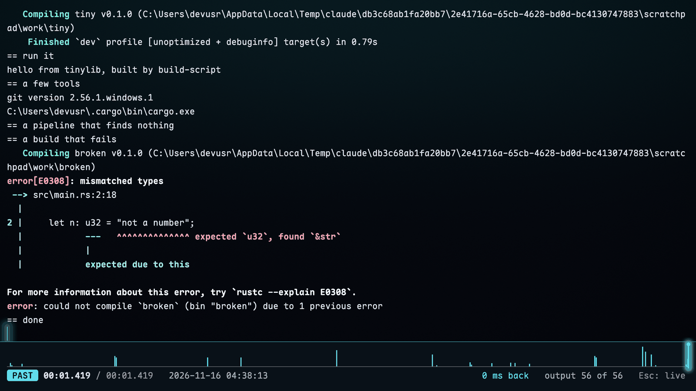
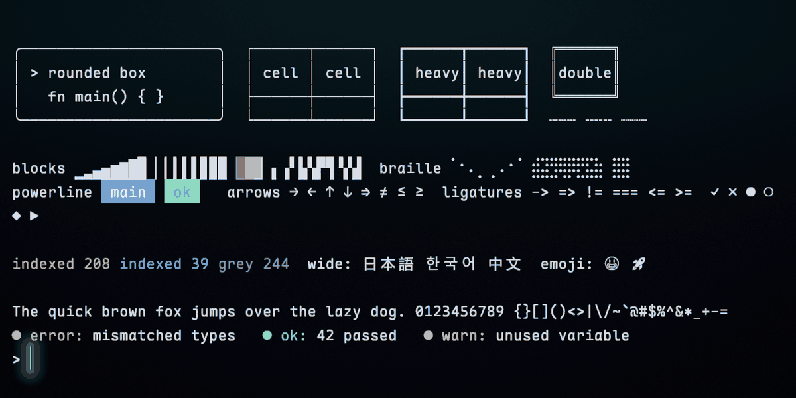
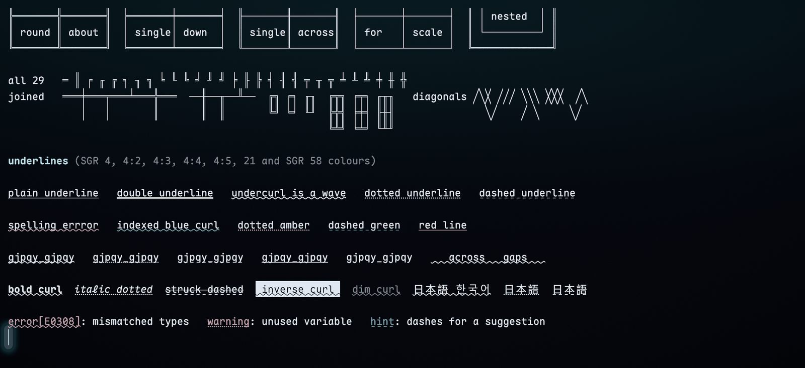
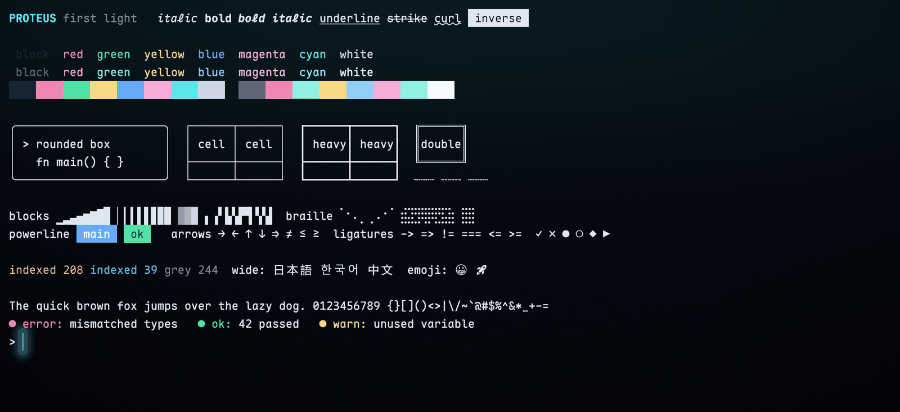

It remembers.
Every session is journaled with timestamps. Any past instant renders cleanly (12 of 12 seeks identical to full replay in the gate; live 8.4 MB session re-rendered at 128x30).
Windows 11 · Rust + wgpu · MIT
A GPU terminal for Windows that remembers every session, sees every process, undoes shell commands, and gives AI agents a real terminal to drive over MCP. One self-contained exe. No install.

A real cargo build (and one that fails), replayed from its journal in the world view. Every node is a process the session started, with its command line and exit code, reported by Windows itself. Nothing in this picture is drawn for decoration. Tested headless through proteus shot (issue #5 asks for the first live run in a window).
Why
Every command you run, and every command your AI agents run, goes through a terminal. Yet a normal terminal cannot tell you what a build spawned, which process failed, what the screen said ten minutes ago, or how to put the files back. PROTEUS keeps all of that.
Every session is journaled with timestamps. Any past instant renders cleanly (12 of 12 seeks identical to full replay in the gate; live 8.4 MB session re-rendered at 128x30).
Windows reports every process a session starts — command line, parent, exit code, CPU time — through a job object. No shell hooks required.
proteus run -- <cmd> snapshots the working tree before and after. proteus chronicle undo puts it back as a dry run until you pass --apply.
proteus mcp gives any MCP client real sessions it can spawn, type into, wait on without polling, read without escape-code noise, and inspect as PNG images.
0.0% GPU, 0.00% CPU, and 0 frames drawn while nothing changes, verified on every gate run.
Fonts, application icon, and Microsoft ConPTY (1.24) live inside the 16.9 MB executable and unpack at run time into %LOCALAPPDATA%\proteus.
What it does
Every image below was rendered headless by proteus shot from real sessions and samples — never mocked in an illustration tool.
Ctrl+Shift+← steps back through a session, output event by output event. The bar is the session's real output rate over its whole life.
Keyframes make past moments reachable directly; proteus recall find TEXT reports when text was on screen, and proteus shot --journal F --until SECS renders the screen as it stood at that moment.

Text that lands in an empty cell unfolds left to right in the shader (--reveal-ms 110) and casts light in its own colour through a quarter-resolution buffer. Bulk output is calmed, and scroll does not re-animate.
Spinners and in-place edits swap instantly. With one cell changing every 100 ms, rendering drops from 103 frames/s (5.65% CPU, 13.2% GPU) to 9 frames/s (0.50% CPU, 1.05% GPU). Nothing animates when nothing happens.

Box drawing (light, heavy, rounded, double, mixed junctions), blocks, braille, and powerline are drawn by the GPU rather than the font, so lines join cleanly at any size.
Undercurl is a real wave; dotted and dashed underlines carry their own SGR colour. Unmodified Maple Mono NF (v8.0-beta.3) handles text, paired with SIL OFL 1.1 licensing inside the binary.

Backgrounds, glyphs, underlines, and the cursor render as one instanced GPU grid rebuilt only on change (ledger#L37). PROTEUS answers colour queries (OSC 4/10/11) from its theme so agents can adopt it.

A daemon inside the same exe holds sessions (proteusd-2.sock). Close the window, open another, and reattach cleanly from the journal with no gap. Ctrl+Shift+D detaches (ledger#L48, ledger#L62).
Content-addressed history of the working tree. Restore is a dry run until you pass --apply, never follows links out of the tree, and snapshots first.
Computed, not sampled: key ticks, text grains (capped at 400 ms in a flood, max 12 voices), bell chime, exit status. Device stays paused at 0.0 ms CPU over 50 s between sounds.
Kitty keyboard protocol (all 5 flags, push/pop/query), synchronized updates (mode 2026), colour queries, OSC 7501 draft 0.4 replies, and a nonce-verified mark scanner (0 of 10,000 forged marks trusted).
Checks once a day for a newer release, verifies its Ed25519 signature, size, and SHA-256 (0.5.0 to 0.5.1 verified live; tampered bytes refused). No downgrades; "update": "off" disables it. Scoop and Claude Desktop copies leave updates to their manager.
proteus shot renders any session, journal, or moment to PNG with no window. proteus ears renders every sound to WAV (0.199 peak, 0.0146 rms, 31 notes over 9.5 s, silent afterwards).
Measured in forge/ledger.json
Measured on Core Ultra 9 285H, Arc 140T, 2880x1800 @120 Hz, DX12 (ledger#L12).
Window 0.00% (166 MB) + daemon 0.00% (14 MB) over 12 s; 0.2 s CPU over 240 s; 0.00% with sound over 10 s.
6.1–7.8 ms p50
Through daemon (10.3–15.4 ms p95, 19.0–19.5 ms max, 67 keys/run). Full gate: 8.8 ms p50, 14.5 ms p95.
2.7–3.0 MB/s in-process and 2.07–2.10 MB/s through daemon (~25% hop cost). Grid build max 1532 us.
Produced by proteus --bench and pwsh forge\gate.ps1. Typing numbers measure from sending the key to the frame's present call and include PSReadLine's own echo time (ledger#L20); PROTEUS does not quote speed against other terminals.
For AI agents
proteus mcp speaks MCP over stdio and is listed in the MCP Registry as io.github.karimalsalah/proteus.
| Tool | What it does |
|---|---|
spawn |
Start a program on a real terminal; a person can watch it live with proteus --attach N. |
send |
Type text and named keys; returns a cursor into the output. |
wait |
Block until a regex matches, output goes quiet, or the program exits. Event-driven, not polling. |
read |
Output since a cursor, lean: escape codes stripped, progress bars collapsed to their final state, repeats folded, errors never dropped, with raw and lean byte counts. |
screen / shot |
The screen as text or as a PNG, now or as it stood at any earlier moment. |
sessions / kill |
List and end sessions. By default an agent drives only sessions it started. |
Install & use
Run it directly, install through Scoop, or connect it to Claude Desktop or Claude Code over MCP.
Download PROTEUS.exe and run it. On first run it unpacks its bundled console host and fonts into %LOCALAPPDATA%\proteus and self-updates after that.
Install and track releases with the Scoop manifest in the repository.
scoop install https://raw.githubusercontent.com/karimalsalah/proteus/main/packaging/scoop/proteus.json
.mcpb)
Download proteus-mcp.mcpb from the latest GitHub release and open it to register the MCP server in Claude Desktop.
Register proteus mcp over stdio with your path to PROTEUS.exe.
claude mcp add --scope user --transport stdio proteus -- "C:\path\to\PROTEUS.exe" mcp
PROTEUS.manifest in the release.
proteus # window on a new session, or the one you left proteus sessions # what the daemon is running proteus run -- cargo test # one undoable step proteus chronicle undo # dry run; add --apply to perform it proteus procs --journal F --tree # every process a session started proteus recall find "error[E" # when it was on screen proteus shot --journal F --until SECS --out then.png proteus update --check # is there a newer signed release
Settings live in %LOCALAPPDATA%\proteus\config.json: font_pt, reveal, light, sound, volume, update, shell, journal_days, journal_max_mb.
Honest limits
PROTEUS is early: one person's daily terminal, built in the open. Please read this before trusting it with anything. Full known issues live in forge/ledger.json.
The world view, time scrubbing, and --attach are tested headless through proteus shot (that is how the images on this page were made). Issue #5 asks for the first real try.
Harnesses run each tool command in a separate process, so a pane running an agent journals its UI rather than tool output. Routing them into PROTEUS sessions is issue #3.
Command boundaries are built but not switched on by default (issue #1). Agent status (OSC 7501) is answered at the source, not yet journaled or shown (issue #2).
Undo covers files in the tracked tree only — not network, registry, databases, or anything in .gitignore. Journals are plaintext and uncompressed, holding everything printed (ledger#L86, ledger#L92).
PROTEUS observes; it does not contain. Sessions inherit the launching process's token without lowering privileges (ledger#L103).
Nobody has tuned sound or the light field by ear and eye (ledger#L95, ledger#L97). No colour emoji, ligatures, or images yet; OSC 8 links are parsed but not drawn; attach replays the whole journal; vim is untested.
What comes next
The full research-backed ranking lives in forge/roadmap.md. Every item states the measurement that proves it worked and the reading that means drop it.
Switch on the pre-parser OSC scanner and injected shell marks so command text, exit status, and exact journal byte ranges become one record.
Surface OSC 7501 (draft 0.4) and OSC 9;4 progress through one attention queue, with one key jumping to the oldest blocked session.
Native staged flood emitter, swap-chain acquire wait, key-to-vblank timing, recorded agent sessions in the gate, and a differential VT check.
Route agent shell calls through one consented hook addressed by command id, assign job lists at process creation, and default sessions to Medium integrity.
Claude Desktop bundle (proteus-mcp.mcpb), MCP Registry listing (io.github.karimalsalah/proteus), Scoop manifest, and sample journals in the repo.
Updater asks GitHub's API for the newest tag rather than relying on the latest-download link (ledger#L79).
First live update delivered and verified byte-identical through the Ed25519 signed channel (ledger#L79).
First public build: signed self-update, job-object process senses, world view, time travel, tree history and undo, MCP server, kitty keyboard, sound from events.